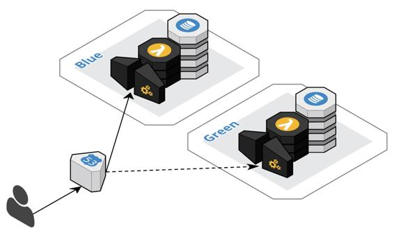

Blue-green deployment
Blue-green deployment is probably the most commonly sited approach to zero-downtime deployment. The general idea is to maintain two identical infrastructure environments named blue and green. At any given point in time only one environment is live. In the following diagram, Blue is the live environment. A new version is deployed to the Green environment and smoke tested via a private endpoint. When the new deployment is deemed ready then the Green environment is made live by switching all traffic from Blue to Green. If anything goes wrong, then the traffic can be routed back to the blue environment. Otherwise, the Blue deployment is retired and the next deployment will start in the Blue.

Ironically, this approach works much more easily with a monolith because there are fewer moving parts. A new deployment of the entire monolith is created and swapped out. With a cloud-native system, each component is deployed independently, thus each component needs to perform a blue-green deployment. If no infrastructure is shared between components, then the process is essentially the same. However, there is a strong tendency to share a container cluster across components. In this case, there are basically two options available to achieve blue-green deployments.
One option is to perform blue-green deployments within a single cluster. Each component would maintain a blue and a green definition in the cluster and alternate between the definitions by changing the image version and switching the targeting on the load balancer. This option can be tricky, and also requires additional headroom in the cluster to accommodate upwards of twice the number of container instances until the switch is fully completed. It also puts the single cluster at risk during the deployment.
The other option is to maintain a blue cluster and a green cluster. At any point in time, some components would be live in the green cluster while the other components would be live in the blue cluster. This approach still requires additional headroom during the switch, but this involves ramping up one cluster and later ramping down the other cluster. Overall, it is much easier to reason about the correctness of this approach, and the additional cluster provides a natural bulkhead. However, there is the additional overhead of managing twice as many clusters.
The blue-green approach does not take the database directly into account, and it is also an all or nothing solution regarding routing. We will discuss improvements with canary deployments.